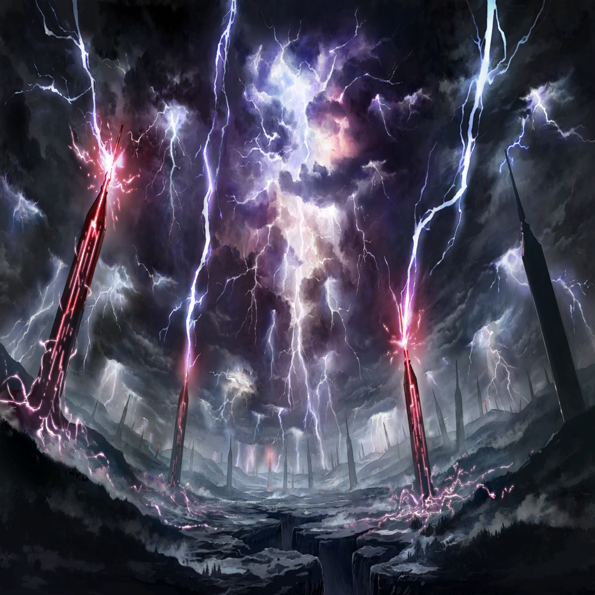

|
 |
| ルーク？ |
ルォォォォォォォォォォ…―― |
|  |

ニムル |
この領域は…神殿!?
まさかマンモンの…！ |
| イエナ |
………… |
| イエナ |
そうか、ルーク…
お前は、ベニカの抱えていた
穢れのすべてを引き受けて… |
ニムル |
このままでは、
守護竜ニドへガルと同じように
罪域を穢れに呑み込むぞ…！ |
| ベニカ |
そんな…ルーク… |
| ルーク？ |
シャァァァァァァァ!! |
| クベラ |
下がれ、ク・ロウ |
| クベラ |
ヌウゥゥゥ!! |
| クベラ |
総員、剣を構えよ！
これなるは竜の堕罪者！ |
| クベラ |
すなわち
我らが相対するに相応しき敵である！ |
ニムル |
クベラ――！ |
| クベラ |
…アレの気は、我らが引きつけよう |
ニムル |
え？ |
| クベラ |
貴様はアレを殺したくないと言った
その意志、未だ違えぬというのであれば
再びここに示してみせよ!! |
ニムル |
…ああ |
| ルーク？ |
ルァァァァァァァ!!! |
| イエナ |
…どうする、ニムル |
ニムル |
あの竜の子は、
まだ完全には堕ち切っていない |
ニムル |
なんとか、あの頭部に
浄化の錬金術を撃ち込めれば… |
| イエナ |
あの巨体の、か？ |
ニムル |
ああ
こんな時に飛空艇があれば―― |
| ？？？ |
ようやく捉えたぞ、バカ弟子ども…！ |
ニムル |
な――この声!? |
| イエナ |
まさか、魔女殿…!? |
 |
ニムル |
つぅ…！ ここは… |

アンブロシア |
ふ、どうやらピンチには
間に合ったようじゃな―― |
アンブロシア |
…なんじゃ、メラとニクスはおらんのか |
ニムル |
禁欲の魔女、アンブロシア…！
それに… |

ミナリオ |
よう、兄弟
どうやらピンチらしいじゃねえか
手を貸すぜ |

ワギナオ |
よかった、ニムル…！ |
ニムル |
ミナリオ！ それにワギナオも！
一体、どうやって…？ |
ミナリオ |
こっちの兄さんが、
アンタらのピンチを知らせて来てな
だったら、助けに来なきゃウソだろ？ |
アンブロシア |
まったく…
呆けている場合ではなかろう？ |
アンブロシア |
眼前に在る、あの竜種――
なんとかしたいと、
そう思っておるのではないかの？ |
ニムル |
その通りです！
ミナリオ、あそこまで飛べるか…!? |
ミナリオ |
当ったり前だ！ |
ミナリオ |
アンタらが嫉妬罪域＜インディヴィア・ベル
ト＞に置いてきたこの飛空艇、
整備も何も完璧に済ませてる |
ミナリオ |
あの程度の高度、ひとっ飛びだぜ！ |
ニムル |
頼む！ |
ニムル |
イエナ、行けるな…！ |
| イエナ |
あ、ああ…
だが、何をするつもりだ…？ |
| イエナ |
ここには断罪の武具も、
それを扱う仲間もいない
一体… |
ニムル |
…俺たちには、
まだ試していない領域がある |
ニムル |
行ってくれ、ミナリオ！ |
ミナリオ |
応さ…！ |
|
 |
ニムル |
――すぅ…はぁ… |
ミナリオ |
制動をかけてる余裕はない！
一瞬の交差だ！
タイミングで飛び乗れ！ |
ニムル |
行くぞ、イエナ！ |
| イエナ |
ああ…！ |
ニムル |
三、二、一…今だ！ |
|
ニムル |
よし、上手く乗った…！ |
ミナリオ |
悪いが、これで限界いっぱいだ！
こっから先は――このどでかい蛇の背を、
駆け上れ…！ |
アンブロシア |
なぜか知らんが、
この船にはライブラが乗っておらん！ |
アンブロシア |
さすがにこの距離をライブラなしに
援護するのは無理じゃぞ！
気合でなんとかせい！ |
ニムル |
十分だ！ 行くぞ、イエナ…！ |
| イエナ |
わかっている…！ |
ニムル |
く…！
竜の身体が、動く…？ |
ワギナオ |
“我が振るうは竜の理法――！
穢れ喰らいて刃を為せ…！” |
ニムル |
これは…ザフィリスの術…？ |
ワギナオ |
詳しい説明はあとだ！
今は目の前の問題に集中を！ |
ニムル |
あ、ああ！ |
| ルーク？ |
ギャァァァァァァ!!! |
| イエナ |
来るぞ、ニムル…！
この質量、直撃すればただでは…！ |
ニムル |
くぅ――!? |
| イエナ |
ニムル――!? |
ニムル |
だい、丈夫だ…!! |
 |
| ？？？ |
“その憤怒を――我は見たり” |
 |
ニムル |
（あの時の、あの声――
そして、ビアンカの言っていた言葉…！） |
|
ビアンカ |
けれど、そのすべてを討ち倒し、
手に入れ、
従えれば―― |
ビアンカ |
あなたの願いは、きっと叶う |
|
|
ニムル |
あの言葉が真実ならば――！ |
ニムル |
“――我は嫉妬を超え、憤怒に至る” |
ニムル |
“ふたつの石より導かれるは、
我が信念――” |
ニムル |
この身は未だ、真理には遠い
救えないものがあり、伸ばしたこの手が
何を掴めるのかもわからない |
ニムル |
だが――！ |
ニムル |
俺は再び、ここに誓おう！ |
ニムル |
俺は、望む。さらなる力を！
この悲しみの螺旋を断ち切る為に
すべての人々を、黄金の境地に導く為に！ |
ニムル |
彼方への扉を開き、
今こそここに示すがいい！ |
ニムル |
これが、俺の望む“未来”だ――！ |
| ？？？ |
嫉妬罪域＜インディヴィア・ベルト＞への
アクセスを確認 |
| ？？？ |
憤怒罪域＜イラ・ベルト＞への
アクセスを確認 |
| ？？？ |
我らは石となり、その意志に従う―― |
|
| イエナ |
…なん、だ？ この光は？ |
| イエナ |
今まで…生きてきて、
こんなものは見たことが… |
| ザフィリス |
おぉ！ あれなるは我らが姫の輝き！
創世の世を照らす、万象の光である!! |
ワギナオ |
うるさい！ 勝手に表に出るな…！
制御が乱れる…!! |
|
ニムル |
“我が錬金の御業、
唯富を産むモノにあらず” |
ニムル |
“すなわち、我が魂こそを――
新たに錬成する極限なり!!” |
|
ニムル |
罪獣の核、制御成功――
このマギルの量ならば、
竜の総身をも一度に払う――!! |
| ルーク？ |
シギャァァァァァァァァァ!!! |
ニムル |
…穢れに呑まれし竜の子よ
今、俺が！ その呪縛を断ち切る…！ |